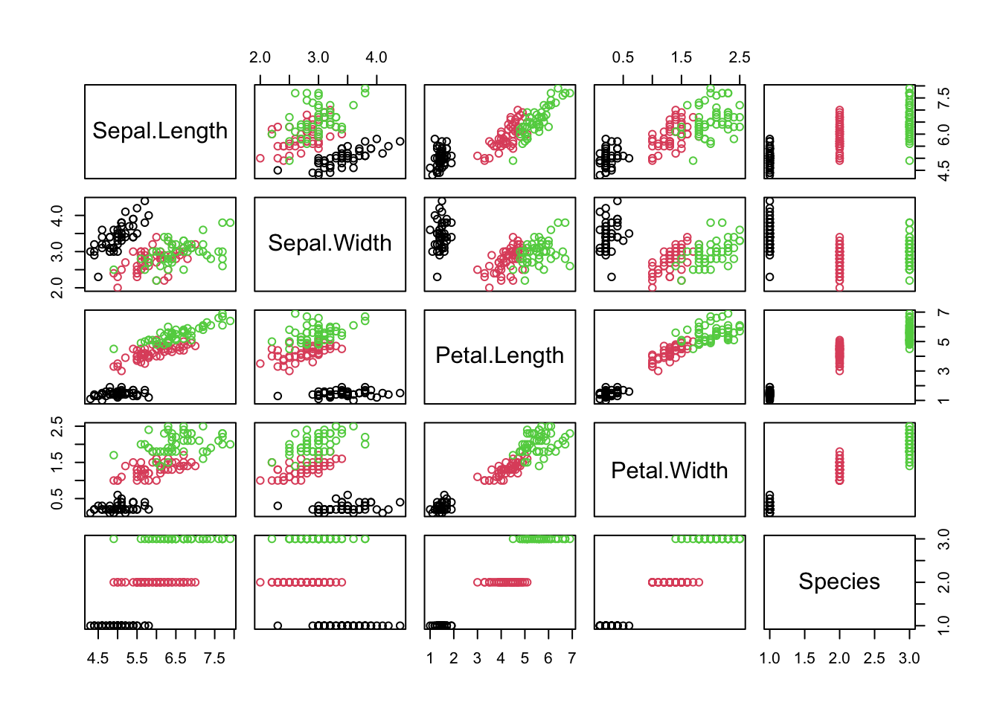

## PCA
# we use the same dataset of flower characteristics of three species of iris
pairs(iris, col = iris$Species)
head(iris)
## Sepal.Length Sepal.Width Petal.Length Petal.Width Species
## 1 5.1 3.5 1.4 0.2 setosa
## 2 4.9 3.0 1.4 0.2 setosa
## 3 4.7 3.2 1.3 0.2 setosa
## 4 4.6 3.1 1.5 0.2 setosa
## 5 5.0 3.6 1.4 0.2 setosa
## 6 5.4 3.9 1.7 0.4 setosa
pca = prcomp(iris[, 1:4], scale = T) # always set scale = T
# when data is very skewed --> better transform e.g. log
summary(pca)
## Importance of components:
## PC1 PC2 PC3 PC4
## Standard deviation 1.7084 0.9560 0.38309 0.14393
## Proportion of Variance 0.7296 0.2285 0.03669 0.00518
## Cumulative Proportion 0.7296 0.9581 0.99482 1.00000
# standard deviation^2 is variance!!!
# cum prop of PC2 is the variance that is visualized in a biplot
# plot the result
# absolute variance of each component
plot(pca) # see row1 of the summary(pca): (sd)^2 = variance
# rel variance of each component
barplot(summary(pca)$importance[2, ],
ylab="proportion of variance explained") # displays % of variance explained by PCs
# Biplot
biplot(pca) # displays PC1 and PC2 AND rotation (vectors) of the different variables AND observations
## distance-based approach: NMDS
library(vegan)
## Carregando pacotes exigidos: permute
## Carregando pacotes exigidos: lattice
?vegan
# community dataset for plants in dunes (included in vegan package):
data("dune")
str(dune) # display structure of the dataset
## 'data.frame': 20 obs. of 30 variables:
## $ Achimill: num 1 3 0 0 2 2 2 0 0 4 ...
## $ Agrostol: num 0 0 4 8 0 0 0 4 3 0 ...
## $ Airaprae: num 0 0 0 0 0 0 0 0 0 0 ...
## $ Alopgeni: num 0 2 7 2 0 0 0 5 3 0 ...
## $ Anthodor: num 0 0 0 0 4 3 2 0 0 4 ...
## $ Bellpere: num 0 3 2 2 2 0 0 0 0 2 ...
## $ Bromhord: num 0 4 0 3 2 0 2 0 0 4 ...
## $ Chenalbu: num 0 0 0 0 0 0 0 0 0 0 ...
## $ Cirsarve: num 0 0 0 2 0 0 0 0 0 0 ...
## $ Comapalu: num 0 0 0 0 0 0 0 0 0 0 ...
## $ Eleopalu: num 0 0 0 0 0 0 0 4 0 0 ...
## $ Elymrepe: num 4 4 4 4 4 0 0 0 6 0 ...
## $ Empenigr: num 0 0 0 0 0 0 0 0 0 0 ...
## $ Hyporadi: num 0 0 0 0 0 0 0 0 0 0 ...
## $ Juncarti: num 0 0 0 0 0 0 0 4 4 0 ...
## $ Juncbufo: num 0 0 0 0 0 0 2 0 4 0 ...
## $ Lolipere: num 7 5 6 5 2 6 6 4 2 6 ...
## $ Planlanc: num 0 0 0 0 5 5 5 0 0 3 ...
## $ Poaprat : num 4 4 5 4 2 3 4 4 4 4 ...
## $ Poatriv : num 2 7 6 5 6 4 5 4 5 4 ...
## $ Ranuflam: num 0 0 0 0 0 0 0 2 0 0 ...
## $ Rumeacet: num 0 0 0 0 5 6 3 0 2 0 ...
## $ Sagiproc: num 0 0 0 5 0 0 0 2 2 0 ...
## $ Salirepe: num 0 0 0 0 0 0 0 0 0 0 ...
## $ Scorautu: num 0 5 2 2 3 3 3 3 2 3 ...
## $ Trifprat: num 0 0 0 0 2 5 2 0 0 0 ...
## $ Trifrepe: num 0 5 2 1 2 5 2 2 3 6 ...
## $ Vicilath: num 0 0 0 0 0 0 0 0 0 1 ...
## $ Bracruta: num 0 0 2 2 2 6 2 2 2 2 ...
## $ Callcusp: num 0 0 0 0 0 0 0 0 0 0 ...
?dune
summary(dune) # display summary of the dataset (summary statistics for each variable)
## Achimill Agrostol Airaprae Alopgeni Anthodor
## Min. :0.0 Min. :0.0 Min. :0.00 Min. :0.00 Min. :0.00
## 1st Qu.:0.0 1st Qu.:0.0 1st Qu.:0.00 1st Qu.:0.00 1st Qu.:0.00
## Median :0.0 Median :1.5 Median :0.00 Median :0.00 Median :0.00
## Mean :0.8 Mean :2.4 Mean :0.25 Mean :1.80 Mean :1.05
## 3rd Qu.:2.0 3rd Qu.:4.0 3rd Qu.:0.00 3rd Qu.:3.25 3rd Qu.:2.25
## Max. :4.0 Max. :8.0 Max. :3.00 Max. :8.00 Max. :4.00
## Bellpere Bromhord Chenalbu Cirsarve Comapalu
## Min. :0.00 Min. :0.00 Min. :0.00 Min. :0.0 Min. :0.0
## 1st Qu.:0.00 1st Qu.:0.00 1st Qu.:0.00 1st Qu.:0.0 1st Qu.:0.0
## Median :0.00 Median :0.00 Median :0.00 Median :0.0 Median :0.0
## Mean :0.65 Mean :0.75 Mean :0.05 Mean :0.1 Mean :0.2
## 3rd Qu.:2.00 3rd Qu.:0.50 3rd Qu.:0.00 3rd Qu.:0.0 3rd Qu.:0.0
## Max. :3.00 Max. :4.00 Max. :1.00 Max. :2.0 Max. :2.0
## Eleopalu Elymrepe Empenigr Hyporadi Juncarti
## Min. :0.00 Min. :0.0 Min. :0.0 Min. :0.00 Min. :0.00
## 1st Qu.:0.00 1st Qu.:0.0 1st Qu.:0.0 1st Qu.:0.00 1st Qu.:0.00
## Median :0.00 Median :0.0 Median :0.0 Median :0.00 Median :0.00
## Mean :1.25 Mean :1.3 Mean :0.1 Mean :0.45 Mean :0.90
## 3rd Qu.:1.00 3rd Qu.:4.0 3rd Qu.:0.0 3rd Qu.:0.00 3rd Qu.:0.75
## Max. :8.00 Max. :6.0 Max. :2.0 Max. :5.00 Max. :4.00
## Juncbufo Lolipere Planlanc Poaprat Poatriv
## Min. :0.00 Min. :0.0 Min. :0.0 Min. :0.0 Min. :0.00
## 1st Qu.:0.00 1st Qu.:0.0 1st Qu.:0.0 1st Qu.:0.0 1st Qu.:0.00
## Median :0.00 Median :2.0 Median :0.0 Median :3.0 Median :4.00
## Mean :0.65 Mean :2.9 Mean :1.3 Mean :2.4 Mean :3.15
## 3rd Qu.:0.00 3rd Qu.:6.0 3rd Qu.:3.0 3rd Qu.:4.0 3rd Qu.:5.00
## Max. :4.00 Max. :7.0 Max. :5.0 Max. :5.0 Max. :9.00
## Ranuflam Rumeacet Sagiproc Salirepe Scorautu
## Min. :0.0 Min. :0.0 Min. :0 Min. :0.00 Min. :0.0
## 1st Qu.:0.0 1st Qu.:0.0 1st Qu.:0 1st Qu.:0.00 1st Qu.:2.0
## Median :0.0 Median :0.0 Median :0 Median :0.00 Median :2.0
## Mean :0.7 Mean :0.9 Mean :1 Mean :0.55 Mean :2.7
## 3rd Qu.:2.0 3rd Qu.:0.5 3rd Qu.:2 3rd Qu.:0.00 3rd Qu.:3.0
## Max. :4.0 Max. :6.0 Max. :5 Max. :5.00 Max. :6.0
## Trifprat Trifrepe Vicilath Bracruta Callcusp
## Min. :0.00 Min. :0.00 Min. :0.0 Min. :0.00 Min. :0.0
## 1st Qu.:0.00 1st Qu.:1.00 1st Qu.:0.0 1st Qu.:1.50 1st Qu.:0.0
## Median :0.00 Median :2.00 Median :0.0 Median :2.00 Median :0.0
## Mean :0.45 Mean :2.35 Mean :0.2 Mean :2.45 Mean :0.5
## 3rd Qu.:0.00 3rd Qu.:3.00 3rd Qu.:0.0 3rd Qu.:4.00 3rd Qu.:0.0
## Max. :5.00 Max. :6.00 Max. :2.0 Max. :6.00 Max. :4.0
NMDS = metaMDS(dune)
## Run 0 stress 0.1192678
## Run 1 stress 0.1886532
## Run 2 stress 0.1192678
## ... Procrustes: rmse 1.258026e-05 max resid 3.164268e-05
## ... Similar to previous best
## Run 3 stress 0.1183186
## ... New best solution
## ... Procrustes: rmse 0.02027014 max resid 0.06496123
## Run 4 stress 0.1183186
## ... Procrustes: rmse 4.230384e-06 max resid 1.475206e-05
## ... Similar to previous best
## Run 5 stress 0.1192678
## Run 6 stress 0.1809578
## Run 7 stress 0.1889638
## Run 8 stress 0.1808911
## Run 9 stress 0.3680059
## Run 10 stress 0.1183186
## ... Procrustes: rmse 1.159455e-05 max resid 3.442588e-05
## ... Similar to previous best
## Run 11 stress 0.1183186
## ... Procrustes: rmse 4.643337e-06 max resid 1.388314e-05
## ... Similar to previous best
## Run 12 stress 0.2361935
## Run 13 stress 0.1192678
## Run 14 stress 0.1192679
## Run 15 stress 0.1183186
## ... Procrustes: rmse 1.447333e-05 max resid 4.510486e-05
## ... Similar to previous best
## Run 16 stress 0.1192678
## Run 17 stress 0.1192678
## Run 18 stress 0.1192679
## Run 19 stress 0.1808911
## Run 20 stress 0.1808911
## *** Best solution repeated 4 times
# algorithm is iterative
NMDS # gives information on NMDS: distance measure, stress (should be low)
##
## Call:
## metaMDS(comm = dune)
##
## global Multidimensional Scaling using monoMDS
##
## Data: dune
## Distance: bray
##
## Dimensions: 2
## Stress: 0.1183186
## Stress type 1, weak ties
## Best solution was repeated 4 times in 20 tries
## The best solution was from try 3 (random start)
## Scaling: centring, PC rotation, halfchange scaling
## Species: expanded scores based on 'dune'
# stress of >= 0.2 = be suspicious, stress >=0.3 indicates that ordination is arbitrary
# increase Dimensions if k is too high
ordiplot(NMDS, type = "t") #"t" = text
# if we have time:
# distance measure can be changed (default is Bray-Curtis): see
?vegdist # some recommendations there
NMDS2 = metaMDS(dune, distance="euclidean")
## Run 0 stress 0.1174523
## Run 1 stress 0.1174523
## ... Procrustes: rmse 3.580249e-06 max resid 1.150625e-05
## ... Similar to previous best
## Run 2 stress 0.1174523
## ... Procrustes: rmse 2.054645e-06 max resid 3.818306e-06
## ... Similar to previous best
## Run 3 stress 0.1174523
## ... Procrustes: rmse 2.128171e-06 max resid 5.656827e-06
## ... Similar to previous best
## Run 4 stress 0.1174523
## ... Procrustes: rmse 2.022272e-06 max resid 6.26572e-06
## ... Similar to previous best
## Run 5 stress 0.1174523
## ... Procrustes: rmse 2.488733e-06 max resid 8.218612e-06
## ... Similar to previous best
## Run 6 stress 0.1177339
## ... Procrustes: rmse 0.01706434 max resid 0.05525565
## Run 7 stress 0.1174523
## ... New best solution
## ... Procrustes: rmse 1.353662e-06 max resid 2.894393e-06
## ... Similar to previous best
## Run 8 stress 0.1174523
## ... Procrustes: rmse 1.40202e-06 max resid 4.031046e-06
## ... Similar to previous best
## Run 9 stress 0.1174523
## ... Procrustes: rmse 2.805574e-06 max resid 7.787809e-06
## ... Similar to previous best
## Run 10 stress 0.1174523
## ... Procrustes: rmse 1.140966e-06 max resid 2.993735e-06
## ... Similar to previous best
## Run 11 stress 0.1177339
## ... Procrustes: rmse 0.0170643 max resid 0.05525551
## Run 12 stress 0.1174523
## ... Procrustes: rmse 1.964847e-06 max resid 5.765074e-06
## ... Similar to previous best
## Run 13 stress 0.1174523
## ... Procrustes: rmse 1.231259e-06 max resid 2.345061e-06
## ... Similar to previous best
## Run 14 stress 0.1174523
## ... Procrustes: rmse 1.055035e-06 max resid 2.452641e-06
## ... Similar to previous best
## Run 15 stress 0.1177339
## ... Procrustes: rmse 0.01706422 max resid 0.05525614
## Run 16 stress 0.1177339
## ... Procrustes: rmse 0.01706442 max resid 0.05525521
## Run 17 stress 0.1177339
## ... Procrustes: rmse 0.01706456 max resid 0.05525899
## Run 18 stress 0.1177339
## ... Procrustes: rmse 0.01706413 max resid 0.05525604
## Run 19 stress 0.1177339
## ... Procrustes: rmse 0.01706403 max resid 0.05525579
## Run 20 stress 0.1174523
## ... Procrustes: rmse 2.007087e-06 max resid 5.652376e-06
## ... Similar to previous best
## *** Best solution repeated 8 times
NMDS2
##
## Call:
## metaMDS(comm = dune, distance = "euclidean")
##
## global Multidimensional Scaling using monoMDS
##
## Data: dune
## Distance: euclidean
##
## Dimensions: 2
## Stress: 0.1174523
## Stress type 1, weak ties
## Best solution was repeated 8 times in 20 tries
## The best solution was from try 7 (random start)
## Scaling: centring, PC rotation
## Species: expanded scores based on 'dune'
ordiplot(NMDS2, type = "t")